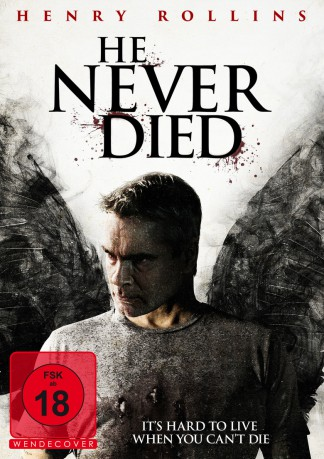
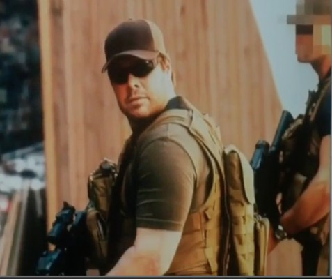
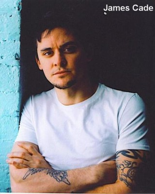
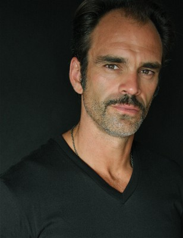
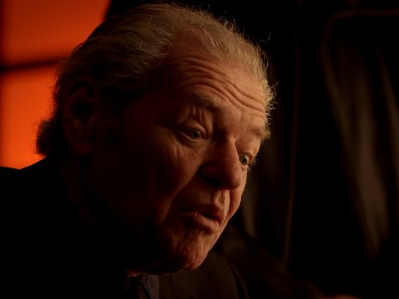

#3698 He Never Died
 gesehen am 18.06.2016
gesehen am 18.06.2016
 
 IMDB-Wertung: 6.4 / 10
IMDB-Wertung: 6.4 / 10  Metascore: 0
Metascore: 0 
Jack (Henry Rollins) ist depressiv und dank seines anti-soziales Verhaltens verbringt er seine Tage nur noch mit Schlafen und Fernsehen. Sein Leben ist kurz gesagt die Hölle. Für ihn wird Alltagstrott neu definiert, denn er wandelt schon seit Tausenden von Jahren auf der Erde. Doch als ihn dann plötzlich seine Vergangenheit in Gestalt seiner 19-jährigen Tochter wieder einholt, wird er aus seiner Lethargie gerissen. Andrea (Jordan Todosey) taucht auf seiner Türschwelle auf, um ihren Vater besser kennenzulernen. Doch die glückliche Familienzusammenführung währt nicht lange, denn finstere Gesellen entführen die junge Frau. Doch die haben die Rechnung ohne Jack gemacht, der sich bestens damit auskennt, dem Bösen den Garaus zu machen.
Jahr: 2015
Dauer: 97 Minuten
FSK: 18
Land: USA Studio: Vertical EntertainmentTonspuren: DTS - ,
Untertitel:
Auflösung: 1080p (1920x816) Größe: 5294 MB
Genre: Thriller, Drama, Komödie
Regisseur: Jason Krawczyk
Drehbuch: Adam Herz
Soundtrack:
Darsteller:
 Henry Rollins als Jack
Henry Rollins als Jack- Booboo Stewart als Jeremy
- Jordan Todosey als Andrea
-  David Richmond-Peck als Steve
-  James Cade als Short
-  Steven Ogg als Alex
- Elias Edraki als Ben
- Walter Alza als Derrick
- Scotty Cook als Flying Man
 Karl Campbell als Gary
Karl Campbell als Gary-  Aron Tager als Announcer
- Craig Burnatowski als Leather
- Danny Lima als Mailman
- Nuala Fitzgerald als Ruth
- Austin Macdonald als Teenager #1
- Xavier de Guzman als Teenager #2
- Justin Bigelli als Thug
- Michael Cram als Tim
- Dominic Longo als Vinny
- Chantal Craig als Bar Patron
- Alan C. Peterson als Televangelist
- Dan Petronijevic als Steve
- Jerry A. Ziler als Thug , uncredited
- Kate Greenhouse als Cara
- Scott Edgecombe als Bartender
- Robert Thomas als Bathroom Man
- Tamara Almeida als Clerk
- Blair Johannes als Grunt
- Domenico Fiore als Manager
- Elley Ray als Miranda
- Anthony Gerbrandt als Smoker
Datei: X:\FSK18-2015\He Never Died (2015, FSK18, 1920x816).mkv seit 20.05.2016
Festplatte: FSK18
 Es gibt insgesamt 23 Filme in der Gruppe 'FSK18-2015'
Es gibt insgesamt 23 Filme in der Gruppe 'FSK18-2015'